Most users: Just read (1) the installation instructions in Chapter 2, (2) Chapter 3, which tells you all you need to get started using qtcm, and (3) examples in Section 4.10 that give a feel for how you can use the model.
Users having problems: Chapter 5 provides troubleshooting tips for a few problems. The detailed description of how the package functions, in Chapter 4, will probably be more useful.
Developers: If you want to change the source code, please read Chapter 6. Chapter 7 describes all the things I'd like to do to improve the package, but haven't gotten to yet.
The single-baroclinic mode Neelin-Zeng Quasi-Equilibrium Tropical Circulation Model (QTCM1) is a primitive equation-based intermediate-level atmospheric model that focuses on simulating the tropical atmosphere. Being more complicated than a simple model, the model has full non-linearity with a basic representation of baroclinic instability, includes a radiative-convective feedback package, and includes a simple land soil moisture routine (but does not include topography). A brief, but more detailed, description of QTCM1 is given in Section 1.6.
Python is an interpreted, object-oriented, multi-platform, open-source language that is used in a variety of software applications, ranging from game development to bioinformatics. In climate studies, Python has been used as the core language for data analysis (e.g., Climate Data Analysis Tools), visualization (e.g., Matplotlib), and modeling (e.g., PyCCSM).
In comparison to traditional compiled languages like Fortran, Python's lack of a separate compile step greatly simplifies the debugging and testing phases of development, because code snippets can be testing as code is written. Python's extensive suite of higher-level tools (e.g., statistics, visualization, string and file manipulation) accessible at runtime enables modeling and analysis to occur concurrently.
The qtcm package is an implementation of the Neelin-Zeng QTCM1 in a Python object-oriented environment. The conversion package f2py is used to wrap the QTCM1 Fortran model routines and manage model execution using Python datatypes and utilities. The result is a modeling package where order and choice of subroutine execution can be altered at runtime. Model analysis and visualization can also be integrated with model execution at runtime.
In this manual I assume you have a rudimentary knowledge of Python. Thus, I do not describe basic Python data types (e.g., dictionaries, lists), object framework and syntax (e.g., classes, methods, attributes, instantiation), module and package importing. If you need to brush up (or learn) Python, I'd recommend the following resources:
The purpose of this package is to make the QTCM1 model easier to use. In order to interpret the results, however, you still need to have a robust sense of what climate models can and cannot tell you. A starting point for the QTCM1 model is the brief description of the model in Section 1.6. After that, I would read the original papers describing the model formulation and results [3,5], and papers citing the model formulation work. Being an intermediate-level model using the quasi-equilibrium assumption, QTCM1 (and thus qtcm) has distinct strengths and limitations; please be aware of them.
| commands | to be typed at the command-line are rendered in a blue, serif, fixed-width typewriter font (e.g., make _qtcm_full_365). | |
| dummy arguments | coupled with code or screen display is rendered in a serif, proportional, italicized font (e.g., Error-Value too long in variable). | |
|---|---|---|
| file and directory names | are rendered in a sans-serif, italicized font (e.g., setbypy.F90). | |
| screen display | is rendered in a green, serif, fixed-width typewriter font. | |
| module, method, and subroutine names | are rendered in a blue, serif, fixed-width typewriter font. | |
| variable and attribute names | are rendered in a blue, serif, fixed-width typewriter font. | |
| class names | are rendered in a blue, serif, fixed-width typewriter font. |
Blocks of code (usually commands, screen display, and module, variable, and class names) are displayed in a blue, serif, fixed-width typewriter font.
This manual describes version 0.1.2 (dated September 12, 2008), of package qtcm. Johnny Lin is the primary author of the package. The qtcm package is built upon the pure-Fortran QTCM1 model, version 2.3 (August 2002), with a few minor changes. Those changes are described in detail in Section 6.2.
The homepage for the qtcm package is http://www.johnny-lin.com/py_pkgs/qtcm. All Python code in this package, and the Fortran files setbypy.F90 and wrapcall.F90, are © 2003-2008 by Johnny Lin and constitutes a library that is covered under the GNU Lesser General Public License (LGPL):
This library is free software; you can redistribute it and/or modify it under the terms of the GNU Lesser General Public License as published by the Free Software Foundation; either version 2.1 of the License, or (at your option) any later version.
This library is distributed in the hope that it will be useful, but WITHOUT ANY WARRANTY; without even the implied warranty of MERCHANTABILITY or FITNESS FOR A PARTICULAR PURPOSE. See the GNU Lesser General Public License for more details.
You should have received a copy of the GNU Lesser General Public License along with this library; if not, write to the Free Software Foundation, Inc., 59 Temple Place, Suite 330, Boston, MA 02111-1307 USA.
You can contact Johnny Lin at his email address or at North Park University, Physics Department, 3225 W. Foster Ave., Chicago, IL 60625, USA.
All other Fortran code in this package, as well as the makefiles, are covered by licenses (if any) chosen by their respective owners.
This manual, in all forms (e.g., HTML, PDF, LATEX), is part of the documentation of the qtcm package and is © 2007-2008 by Johnny Lin. Permission is granted to copy, distribute and/or modify this document under the terms of the GNU Free Documentation License, Version 1.2 or any later version published by the Free Software Foundation; with no Invariant Sections, no Front-Cover Texts, and no Back-Cover Texts. A copy of the license can be found here.
Transparent copies of this document are located online in PDF and HTML formats. The LATEX source files are distributed with the qtcmdistribution. While the HTML version is nearly identical to the PDF and LATEX versions, not every feature in the manual was successfully converted. This is particularly true with figures, which are unnumbered in the HTML version and may be formatted differently than the authoritative PDF version. Thus, please consider the LATEX version as the authoritative version.
Acknowledgements: Thanks to David Neelin and Ning Zeng and the Climate Systems Interactions Group at UCLA for their encouragement and help. On the Python side, thanks to Alexis Zubrow, Christian Dieterich, Rodrigo Caballero, Michael Tobis, and Ray Pierrehumbert for steering me straight. Early versions of some of this work was carried out at the University of Chicago Climate Systems Center, funded by the National Science Foundation (NSF) Information Technology Research Program under grant ATM-0121028. Any opinions, findings and conclusions or recommendations expressed in this material are those of the author and do not necessarily reflect the views of the NSF.
Intel and Xeon are registered trademarks of Intel Corporation. Matlab is a registered trademark of The MathWorks. UNIX is a registered trademark of The Open Group.
This description is copied from Ch. 3 of Lin [2], with minor revisions. Model formulation is fully described in Neelin & Zeng [3] and model results are described in Zeng et al. [5]. Neelin & Zeng [3] is based upon v2.0 of QTCM1 and Zeng et al. [5] is based on QTCM1 v2.1. The QTCM1 manual [4] describes the details of model implementation.
QTCM1 differs from most full-scale GCMs primarily in how the vertical temperature, humidity, and velocity structure of the atmosphere is represented. First, instead of representing the vertical structure by finite-differenced levels, the model uses a Galerkin expansion in the vertical. The vertical basis functions are chosen according to analytical solutions under convective quasi-equilibrium conditions, so only a few need be retained. Temperature and humidity are each described by separate vertical basis functions (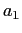 and 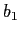, respectively). Low-level variations in the humidity basis are larger than in the temperature basis. For velocity, QTCM1 uses a single baroclinic basis function (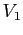) defined consistently with the temperature basis function, as well as a barotropic velocity mode (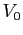). The vertical profiles of , , and are given in Figure 1.1. Currently, QTCM1 does not include a separate vertical degree of freedom describing the PBL. The horizontal grid spacing of the model is 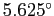 longitude by 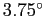 latitude.
Below is a summary of the main model equations [3]:
In the simplest formulation, the vertically integrated
convective heating and moisture sink
are assumed to be equal and opposite, so:
| 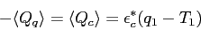 | (1.5) |
For its convective parameterization for 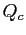, this model uses the
Betts-Miller [1] moist convective
adjustment scheme, a scheme that is also used in some GCMs.
In the convective parameterization, the coefficient
is defined as:
| 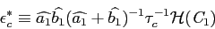 | (1.6) |
Sensible heat (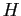) and evaporation (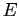) are given as
bulk-aerodynamic formulations:
| 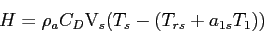 | (1.7) |
| 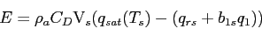 | (1.8) |
Longwave radiation components are denoted by 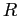, and net shortwave radiation is denoted by 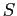. The terms 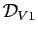 and 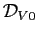 are the advection-diffusion operators for the momentum equations (projected onto and 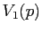, respectively). The terms 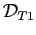 and 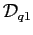 are the advection-diffusion operators for the temperature and moisture equations, respectively, using a vertical average projection. The 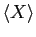 and 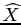 operators are equivalent and denote vertically integration over the troposphere. Please see Neelin & Zeng [3] and Zeng et al. [5] for a more complete description of equations and coefficients.